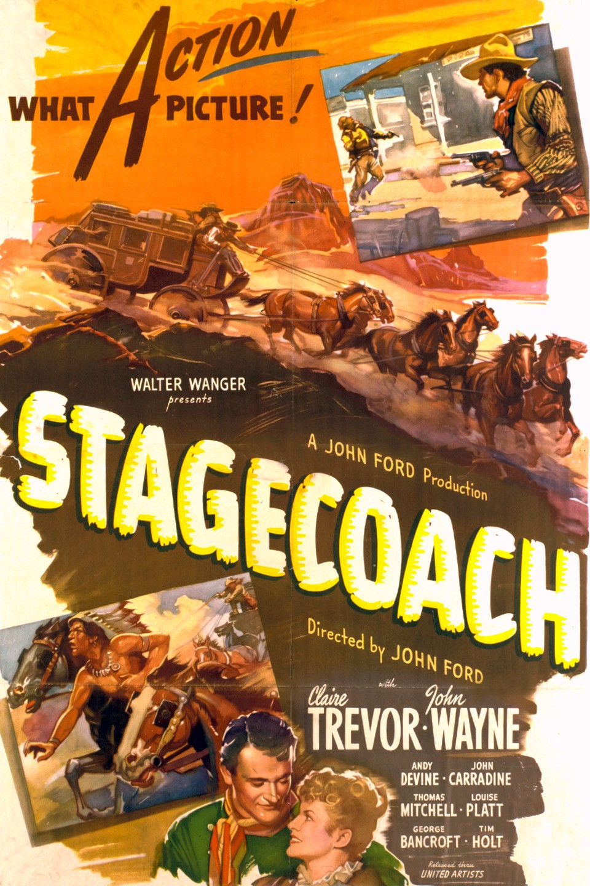

Stagecoach
12th Academy Awards
(Oscars 1940)
7 Nominations, 2 Awards
| Nominations | ||
|---|---|---|
| Category | Nominees | Result |
| Outstanding Production | Walter Wanger | Nominated |
| Actor in a Supporting Role | Thomas Mitchell | Won |
| Directing | John Ford | Nominated |
| Cinematography (Black-and-White) | Bert Glennon | Nominated |
| Film Editing | Dorothy Spencer and Otho Lovering | Nominated |
| Art Direction | Alexander Toluboff | Nominated |
| Music (Scoring) | Frank Harling, John Leipold, Leo Shuken, and Richard Hageman | Won |